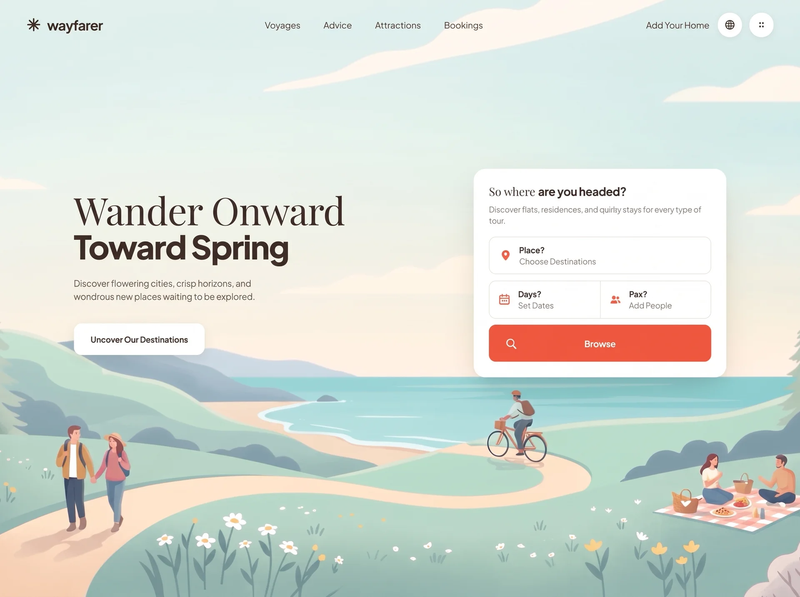

Way Farer
Traveltravelyilai-ai 公开页面
收录时间：2026-09-11正文：21,794 字符

本地预览图 · webp
完整提示词
Build a complete, single-file `index.html` hero section for a travel-booking site called
"wayfarer". No build step, no frameworks, no local assets — everything inline in one file
(one <style> block in <head>, one <script> before </body>). Must be fully mobile responsive.
════════════════════════════════════════════════════════════════════════
1. FONTS
════════════════════════════════════════════════════════════════════════
Load from Google Fonts with preconnect to fonts.googleapis.com and fonts.gstatic.com
(crossorigin):
https://fonts.googleapis.com/css2?family=Playfair+Display:wght@400;500;600&family=Plus+Jakarta+Sans:wght@400;500;600;700;800&display=swap
- "Playfair Display" (serif) — used ONLY for headline line 1 and the light part of the card
title. Fallback: Georgia, serif.
- "Plus Jakarta Sans" — everything else. Body fallback stack:
system-ui, -apple-system, "Segoe UI", Roboto, sans-serif.
════════════════════════════════════════════════════════════════════════
2. DESIGN TOKENS (:root custom properties)
════════════════════════════════════════════════════════════════════════
--ink:#33251f; --ink-soft:#4a3a33; --muted:#8d8279; --line:#eae5df;
--orange:#ee5b3f; --orange-dark:#e04b2e; --white:#fff; --sky:#cfe7e6;
--shell:1240px; --shell-wide:1420px;
--display: clamp(2.6rem, 4.7vw, 5.6rem);
--ease: cubic-bezier(.22,1,.36,1);
--ease-sheet: cubic-bezier(.76,0,.24,1);
--radius-card:22px; --radius-field:13px;
Base resets: border-box on *,::before,::after; html{-webkit-text-size-adjust:100%};
body{margin:0; font-family Plus Jakarta Sans; color:var(--ink); background:var(--sky);
overflow-x:hidden}; body.nav-open{overflow:hidden}; img,svg,video{display:block;max-width:100%};
button{font:inherit;color:inherit;border:0;background:none;cursor:pointer};
a{color:inherit;text-decoration:none}
════════════════════════════════════════════════════════════════════════
3. BACKGROUND VIDEO (use these exact URLs — do not substitute)
════════════════════════════════════════════════════════════════════════
<video class="bg" autoplay muted loop playsinline preload="auto" poster="POSTER">
<source src="MP4" type="video/mp4" />
</video>
MP4 (src):
https://d8j0ntlcm91z4.cloudfront.net/user_38xzZboKViGWJOttwIXH07lWA1P/hf_20260908_124430_abdf16a0-ba4f-4570-8e96-f7ba8dec9f3f.mp4
POSTER (escape every & as & inside the attribute):
https://images.higgs.ai/?default=1&output=webp&url=https%3A%2F%2Fd8j0ntlcm91z4.cloudfront.net%2Fuser_38xzZboKViGWJOttwIXH07lWA1P%2Fhf_20260908_121950_627ff478-ebe1-487c-b160-24e86434aae2.png&w=1920&q=85
The video is a flat-vector spring travel illustration: pastel sky, ocean bay, pine trees,
meadow with wildflowers, a walking couple, a cyclist, and a picnic — soft mint/cream palette.
════════════════════════════════════════════════════════════════════════
4. STRUCTURE
════════════════════════════════════════════════════════════════════════
<div class="stage"> → position:relative; min-height:100vh then 100svh; flex column;
overflow:hidden. DO NOT add isolation:isolate (see §9).
<video class="bg"> → position:absolute; inset:0; z-index:0; width/height 100%;
object-fit:cover; object-position:center 62%
<div class="bg-wash"> → position:absolute; inset:0; z-index:1; pointer-events:none
<header class="header"> → position:relative; z-index:60; padding:26px 40px
<main class="hero"> → position:relative; z-index:10; flex:1; padding:0 40px 16vh;
display:flex; align-items:center
</div>
<div class="sheet-wrap" id="mobile-sheet"> → position:fixed; inset:0; z-index:50
<script>
.bg-wash background (two stacked gradients, desktop):
linear-gradient(180deg, rgba(255,253,248,.55) 0%, rgba(255,253,248,.16) 28%, rgba(255,253,248,0) 52%),
radial-gradient(120% 78% at 22% 34%, rgba(255,252,246,.55) 0%, rgba(255,252,246,0) 60%)
════════════════════════════════════════════════════════════════════════
5. HEADER
════════════════════════════════════════════════════════════════════════
.header-inner: max-width:var(--shell-wide); margin:0 auto; display:flex;
align-items:center; gap:28px
LEFT — brand link, aria-label="wayfarer home":
Inline SVG "mark" (viewBox 0 0 32 32, fill none, class="mark", 28x28), an 8-spoke
asterisk star drawn as 4 crossed strokes, g stroke=currentColor stroke-width="3.1"
stroke-linecap="round":
M16 3.2V28.8 | M3.2 16H28.8 | M6.9 6.9L25.1 25.1 | M25.1 6.9L6.9 25.1
Then <span>wayfarer</span>
.brand: display:flex; gap:11px; font-size:1.62rem; font-weight:700;
letter-spacing:-.035em; flex:0 0 auto
.brand .mark: transition:transform .6s var(--ease); on .brand:hover → rotate(90deg)
CENTER — <nav class="nav" aria-label="Primary"> with margin:0 auto,
gap:clamp(18px,2.6vw,46px). Four links, exact text in order:
Voyages · Advice · Attractions · Bookings
Link style: font-size:1.02rem; font-weight:500; color:var(--ink-soft); padding:6px 2px
Hover: color→var(--ink), plus an ::after underline (height:2px; border-radius:2px;
background:var(--ink); left:0;right:0;bottom:0) that animates scaleX(0)→scaleX(1) with
transform-origin flipping right→left, transition .45s var(--ease)
RIGHT — .header-actions (display:flex; gap:14px; flex:0 0 auto):
a) <a class="host"> text: "Add Your Home" — same size/weight as nav links;
hover: color→ink and translateY(-1px)
b) .icon-btn globe, aria-label="Switch Language" — SVG viewBox 0 0 24 24, fill none,
stroke currentColor, stroke-width 1.7: circle cx12 cy12 r9; path M3.2 9.4h17.6
M3.2 14.6h17.6; ellipse cx12 cy12 rx4 ry9
c) .icon-btn 2x2 dots, aria-label="View Apps Menu" — fill currentColor, four circles
r=2.1 at (9,8) (15,8) (9,16) (15,16)
d) .burger button id="burger" aria-label="Show Menu" aria-expanded="false"
aria-controls="mobile-sheet", containing three empty <span> elements
.icon-btn: 46x46; border-radius:50%; background:#fff; display:grid; place-items:center;
box-shadow:0 2px 10px rgba(51,37,31,.09); svg 21x21;
hover → translateY(-3px) + box-shadow:0 10px 22px rgba(51,37,31,.16);
transition:transform .38s var(--ease), box-shadow .38s var(--ease)
.burger: display:none by default; 46x46 circle, white, same shadow;
position:relative; z-index:60.
Bars: position:absolute; left:50%; top:50%; width:19px; height:2px; border-radius:2px;
background:var(--ink); transition:transform .55s var(--ease), opacity .3s ease,
width .45s var(--ease)
span1 → translate(-50%, calc(-50% - 5.5px))
span2 → translate(-50%,-50%); width:13px
span3 → translate(-50%, calc(-50% + 5.5px))
When body.nav-open (morph into an X):
span1 → translate(-50%,-50%) rotate(45deg)
span2 → opacity:0; translate(-50%,-50%) scaleX(.2)
span3 → translate(-50%,-50%) rotate(-45deg)
════════════════════════════════════════════════════════════════════════
6. HERO (two-column grid)
════════════════════════════════════════════════════════════════════════
.hero-inner: max-width:var(--shell); margin:0 auto; width:100%; display:grid;
grid-template-columns: minmax(0,1fr) 480px; gap:clamp(32px,5vw,90px); align-items:center
LEFT COLUMN (.hero-copy)
<h1 class="headline"> line-height:1.02; letter-spacing:-.02em; margin:0
Two lines, each wrapped as: <span class="line line-N"><span>TEXT</span></span>
where .line{display:block; overflow:hidden; padding-bottom:.06em} and
.line > span{display:block} ← the overflow:hidden gives a mask-reveal feel.
Line 1 text: "Wander Onward"
→ Playfair Display, weight 400, font-size:var(--display), letter-spacing:-.012em
Line 2 text: "Toward Spring"
→ Plus Jakarta Sans weight 800, font-size:calc(var(--display) * .855),
letter-spacing:-.032em
<p class="hero-sub"> margin:clamp(16px,1.7vw,24px) 0 0; max-width:34ch;
font-size:clamp(1rem,1.06vw,1.2rem); line-height:1.55; color:var(--ink-soft)
Exact text: "Discover flowering cities, crisp horizons, and wondrous new places waiting to be explored."
<a class="cta"> exact text: "Uncover Our Destinations"
inline-flex centered; margin-top:clamp(24px,2.6vw,38px); padding:1.32em 2.1em;
border-radius:15px; background:#fff; font-size:clamp(.95rem,.92vw,1.06rem);
font-weight:700; letter-spacing:-.01em; box-shadow:0 4px 18px rgba(51,37,31,.1);
hover → translateY(-4px) + 0 16px 32px rgba(51,37,31,.18); active → translateY(-1px);
transition:transform .4s var(--ease), box-shadow .4s var(--ease)
RIGHT COLUMN (.card) — white search panel
background:#fff; border-radius:var(--radius-card); padding:clamp(22px,1.9vw,30px);
box-shadow:0 24px 60px -22px rgba(51,37,31,.28), 0 3px 10px rgba(51,37,31,.05)
<h2 class="card-title">So where <b>are you headed?</b></h2>
Base: Playfair Display 400, font-size:clamp(1.32rem,1.42vw,1.62rem),
letter-spacing:-.005em, line-height:1.25, margin:0
The <b>: Plus Jakarta Sans 800, letter-spacing:-.028em
<p class="card-desc"> margin:.6em 0 clamp(16px,1.4vw,20px);
font-size:clamp(.9rem,.85vw,.98rem); line-height:1.5; color:var(--muted)
Exact text: "Discover flats, residences, and quirky stays for every type of tour."
<div class="field-stack"> display:grid; gap:12px — contains 3 rows:
ROW 1 — full-width <label class="field">, orange filled map-pin SVG, then
.field-label "Place?" and <input placeholder="Choose Destinations" aria-label="Place?">
Pin path (fill currentColor, viewBox 0 0 24 24):
M12 2.2a7.3 7.3 0 0 0-7.3 7.3c0 5.3 6.5 11.6 6.8 11.9a.7.7 0 0 0 1 0c.3-.3 6.8-6.6 6.8-11.9A7.3 7.3 0 0 0 12 2.2Zm0 10a2.9 2.9 0 1 1 0-5.8 2.9 2.9 0 0 1 0 5.8Z
ROW 2 — <div class="field-split"> = ONE bordered rounded box, display:grid
grid-template-columns:1fr 1fr; overflow:hidden; holding two <label class="field">
that have their own border/radius/shadow removed (padding:14px 16px) and are
separated by `.field-split .field + .field{border-left:1px solid var(--line)}`
Left → calendar SVG, label "Days?", placeholder "Set Dates", aria-label="Days?"
rect x3 y4.6 w18 h16.4 rx3.2 fill=currentColor opacity=.16
same rect stroked, stroke-width 1.7
path M3 9.7h18 (sw 1.7); path M8 2.6v3.6M16 2.6v3.6 (sw 1.9, round caps)
three r=1.15 filled circles at cx 8.2 / 12 / 15.8, cy 14.4
Right → guests SVG, label "Pax?", placeholder "Add People", aria-label="Pax?"
circle cx8.6 cy8.2 r3.5; circle cx16.4 cy9 r2.8 opacity=.68
path M2.4 18.4c0-3.2 2.8-5.1 6.2-5.1s6.2 1.9 6.2 5.1c0 .8-.5 1.2-1.3 1.2H3.7c-.8 0-1.3-.4-1.3-1.2Z
path M16.5 13.5c2.9 0 5.1 1.6 5.1 4.3 0 .9-.5 1.3-1.3 1.3h-3.6c.3-.5.4-1 .4-1.6 0-1.6-.6-3-1.7-4Z opacity=.68
ROW 3 — <button class="search-btn" type="button">: magnifier SVG + <span>Browse</span>
.field: display:flex; align-items:center; gap:14px; border:1px solid var(--line);
border-radius:var(--radius-field); padding:14px 18px; min-height:70px; background:#fff;
transition:border-color .35s ease, box-shadow .35s ease, transform .35s var(--ease)
.field:hover / :focus-within AND .field-split:hover / :focus-within →
border-color:#d8cec3; box-shadow:0 8px 20px -10px rgba(51,37,31,.24); translateY(-2px)
.field-icon: 24x24; flex:0 0 auto; color:var(--orange) ← all three icons are orange
.field-body: min-width:0; flex:1
.field-label: display:block; font-size:.94rem; font-weight:700; letter-spacing:-.015em;
line-height:1.3
.field-input: display:block; width:100%; border:0; outline:0; padding:2px 0 0;
font:inherit; font-size:.92rem; color:var(--ink); background:transparent;
::placeholder color:var(--muted)
.search-btn: position:relative; flex centered; width:100%; min-height:70px;
border-radius:var(--radius-field); background:var(--orange); color:#fff;
font-size:1.02rem; font-weight:700; letter-spacing:-.01em; overflow:hidden
Magnifier SVG is position:absolute; left:30px; 24x24 (fill none, stroke currentColor,
stroke-width 2.1, round caps: circle cx10.8 cy10.8 r6.6; path "M15.8 15.8 21 21")
while the word "Browse" stays centered in the button.
::before sheen: inset:0; background:linear-gradient(100deg,transparent 20%,
rgba(255,255,255,.28) 50%,transparent 80%); transform:translateX(-120%);
transition:transform .9s var(--ease); on hover → translateX(120%)
hover → background:var(--orange-dark); translateY(-3px);
box-shadow:0 16px 30px -12px rgba(238,91,63,.7); active → translateY(-1px)
════════════════════════════════════════════════════════════════════════
7. STAGGERED ENTRANCE ANIMATIONS
════════════════════════════════════════════════════════════════════════
Three keyframes, driven by a per-element `--d` delay set inline as style="--d:.52s":
@keyframes rise { from{opacity:0; transform:translate3d(0,26px,0); filter:blur(7px)}
to {opacity:1; transform:none; filter:blur(0)} }
@keyframes drop { from{opacity:0; transform:translate3d(0,-16px,0)} to{opacity:1; transform:none} }
@keyframes pop { from{opacity:0; transform:translate3d(0,34px,0) scale(.965); filter:blur(9px)}
to {opacity:1; transform:none; filter:blur(0)} }
.anim-rise{ animation:rise .95s var(--ease) both; animation-delay:var(--d,0s) }
.anim-drop{ animation:drop .8s var(--ease) both; animation-delay:var(--d,0s) }
.anim-pop { animation:pop 1.05s var(--ease) both; animation-delay:var(--d,0s) }
EXACT delays (header drops down, hero rises up, card pops):
brand .12s | burger .30s | nav: Voyages .22s, Advice .29s, Attractions .36s,
Bookings .43s | "Add Your Home" .50s | globe .57s | apps .64s ← all anim-drop
headline line 1 .52s | line 2 .64s | hero-sub .78s | cta .90s ← all anim-rise
card .62s (anim-pop) | card-title .86s | card-desc .94s |
Place field 1.02s | field-split 1.10s | search-btn 1.18s ← all anim-rise
Background video ambience:
.bg starts opacity:0; transform:scale(1.08) and runs
animation: bgIn 2.4s var(--ease) .05s forwards, bgDrift 34s ease-in-out 2.4s infinite alternate;
@keyframes bgIn{ to{opacity:1; transform:scale(1.02)} }
@keyframes bgDrift{ from{transform:scale(1.02)} to{transform:scale(1.09)} }
.bg-wash starts opacity:0 with animation: washIn 1.6s ease .5s forwards;
@keyframes washIn{ to{opacity:1} }
Add a prefers-reduced-motion:reduce block that forces animation-duration:.001ms,
animation-delay:0s, transition-duration:.01ms, transition-delay:0s on *,::before,::after
(all !important) and resets .bg to opacity:1; transform:none.
════════════════════════════════════════════════════════════════════════
8. MOBILE MENU SHEET (premium slide-down)
════════════════════════════════════════════════════════════════════════
Markup lives OUTSIDE .stage, as a direct child of <body>:
<div class="sheet-wrap" id="mobile-sheet">
<div class="sheet-scrim" data-close></div>
<nav class="sheet" aria-label="Mobile">
<div class="sheet-nav"> ← 4 links, each: TEXT + <span>↗</span> (↗ arrow),
every link has data-close
Voyages · Advice · Attractions · Bookings
</div>
<div class="sheet-foot">
<a class="sheet-host" data-close>Add Your Home</a>
+ the same globe .icon-btn (aria-label="Switch Language")
+ the same 2x2-dots .icon-btn (aria-label="View Apps Menu")
</div>
</nav>
</div>
.sheet-wrap: position:fixed; inset:0; z-index:50; opacity:0; visibility:hidden;
transition:opacity .5s ease, visibility 0s linear .5s
body.nav-open .sheet-wrap: opacity:1; visibility:visible;
transition:opacity .45s ease, visibility 0s
.sheet-scrim: position:absolute; inset:0; background:rgba(51,37,31,.32);
backdrop-filter:blur(6px) (+ -webkit- prefix)
.sheet: position:absolute; top/left/right:0; background:#fffdfa;
border-radius:0 0 30px 30px; padding:104px 26px 34px;
box-shadow:0 30px 70px -20px rgba(51,37,31,.4);
transform:translateY(-101%); transition:transform .72s var(--ease-sheet);
max-height:100vh then 100svh; overflow-y:auto
body.nav-open .sheet → transform:translateY(0)
(the 104px top padding leaves the logo + X button visible above the links)
.sheet-nav a: display:flex; justify-content:space-between; align-items:center;
padding:17px 4px; font-size:1.28rem; font-weight:600; letter-spacing:-.02em;
border-bottom:1px solid var(--line); :last-child border-bottom:0;
starts opacity:0; transform:translateY(18px);
transition:opacity .5s ease, transform .6s var(--ease), color .25s ease
a span (the arrow): color:var(--muted); font-size:1rem;
transition:transform .45s var(--ease); on a:hover → translateX(5px);
a:active → color:var(--orange)
Staggered open (delays apply only while body.nav-open, so closing snaps back fast):
nth-child(1) .20s | (2) .27s | (3) .34s | (4) .41s
.sheet-foot: display:flex; align-items:center; gap:12px; margin-top:26px;
same opacity/translateY(18px) start, transition-delay .50s when open
.sheet-foot .icon-btn{ box-shadow:0 2px 10px rgba(51,37,31,.12); flex:0 0 auto }
.sheet-host: flex:1; inline-flex centered; padding:15px 20px; border-radius:13px;
background:var(--ink); color:#fffdfa; font-weight:700; font-size:1rem
════════════════════════════════════════════════════════════════════════
9. Z-INDEX / STACKING — CRITICAL, GET THIS RIGHT
════════════════════════════════════════════════════════════════════════
All of these live in the ROOT stacking context. Do NOT put isolation:isolate on .stage
and do NOT give .bg or .bg-wash a negative z-index (a negative z-index there makes the
video disappear behind the body background once .stage is not a stacking context).
Correct order:
.bg 0 < .bg-wash 1 < .hero 10 < .sheet-wrap 50 < .header 60
The header MUST outrank the sheet (60 > 50) so the hamburger stays clickable on top of
the open sheet and visibly morphs into the X. .burger itself also carries z-index:60.
════════════════════════════════════════════════════════════════════════
10. RESPONSIVE BREAKPOINTS
════════════════════════════════════════════════════════════════════════
@media (max-width:1180px)
.hero-inner grid-template-columns: minmax(0,1fr) 420px
.header padding:22px 28px; .hero padding:0 28px 12vh
@media (max-width:980px) ← mobile nav kicks in here
:root{ --display: clamp(2.7rem, 8.4vw, 4.2rem) }
hide .nav, .header-actions .host, .header-actions .icon-btn (display:none)
.burger{ display:block }; .header-inner{ justify-content:space-between };
.header-actions{ margin-left:auto }
.hero{ padding:clamp(18px,4vh,44px) 24px clamp(48px,10vh,90px); align-items:flex-start }
.hero-inner{ grid-template-columns:minmax(0,1fr); gap:34px; max-width:560px }
.hero-sub{ max-width:46ch }
.bg{ object-position:center 58% }
.bg-wash{ background:linear-gradient(180deg, rgba(255,253,248,.72) 0%,
rgba(255,253,248,.42) 34%, rgba(255,253,248,.1) 60%, rgba(255,253,248,0) 78%) }
@media (max-width:640px)
.header padding:18px; .brand font-size:1.42rem; .brand .mark 25x25
.hero padding:6px 18px 46px; .hero-inner gap:28px
.cta{ width:100%; padding:1.25em 1.6em }
.card{ padding:20px; border-radius:20px }
.field{ min-height:64px; padding:12px 15px; gap:12px }
.field-split .field{ padding:12px 13px }; .field-icon 22x22
.search-btn{ min-height:64px }; .search-btn svg{ left:22px; width:22px; height:22px }
.sheet{ padding:96px 20px 30px; border-radius:0 0 26px 26px }
@media (max-width:336px) ← deliberately low so 360/375/390px phones KEEP Days?+Pax?
side by side exactly like the desktop layout
.field-split{ grid-template-columns:1fr }
.field-split .field + .field{ border-left:0; border-top:1px solid var(--line) }
.field-label{ font-size:.9rem }
════════════════════════════════════════════════════════════════════════
11. JAVASCRIPT (vanilla, wrapped in an IIFE)
════════════════════════════════════════════════════════════════════════
- setMenu(open): toggles `nav-open` on <body>, sets burger aria-expanded to "true"/"false",
and sets burger aria-label to "Hide Panel" when open / "Show Menu" when closed.
- Clicking #burger toggles the menu.
- Clicking ANY [data-close] element (scrim, each sheet link, the sheet host button)
closes it.
- Escape key closes it.
- window resize > 980px force-closes it.
- Autoplay nudge: grab .bg, call vid.play() and swallow the rejected promise with
.catch(function(){}); re-call it on document 'visibilitychange' when not hidden.
════════════════════════════════════════════════════════════════════════
12. DOCUMENT HEAD
════════════════════════════════════════════════════════════════════════
<html lang="en">, charset UTF-8,
<meta name="viewport" content="width=device-width, initial-scale=1, viewport-fit=cover">
<title>wayfarer — Wander Onward Toward Spring</title> (real em dash)
════════════════════════════════════════════════════════════════════════
13. OVERALL LOOK
════════════════════════════════════════════════════════════════════════
Airy, premium, editorial travel-brand feel. Warm dark-brown text on the pastel mint/cream
illustration, one coral-orange accent used only for the field icons and the Browse button.
Hero copy sits left-of-center in the upper portion of the viewport (the 16vh bottom padding
pushes it up so the illustration's foreground meadow stays visible); the white search card
floats to its right. Everything must load and animate correctly as a plain file:// page.把上面的提示词完整复制到支持长文本的 AI 工具中，再按需要替换品牌名、配色与文案。提示词描述的是整页结构与动效节奏，生成后建议在真实浏览器里检查首屏加载和移动端表现。
来源与版权
该条目来自公开提示词页面，原始出处信息未随页面提供。
提示词文本与预览素材的版权归原作者或原平台所有，本站仅作索引与归档。若你是权利人并希望移除本条内容，请通过联系方式告知。